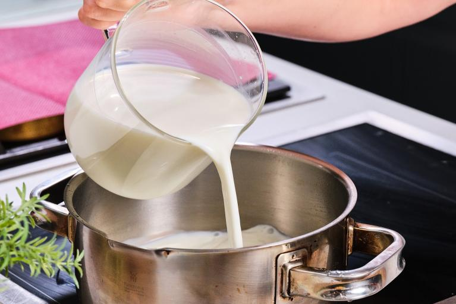
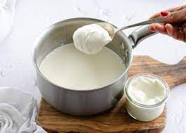
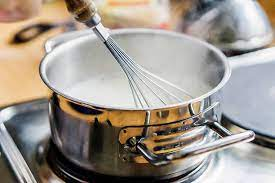
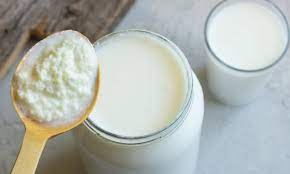
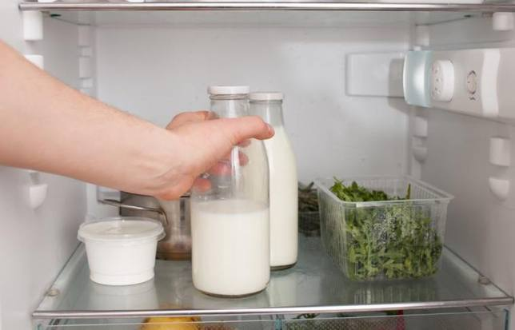
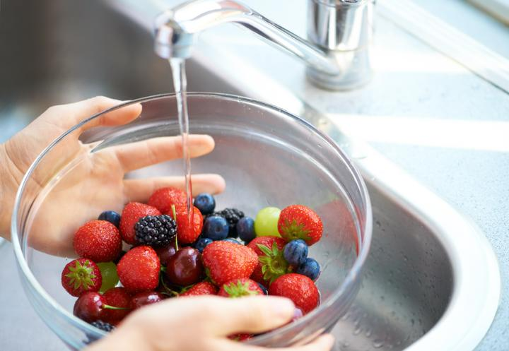
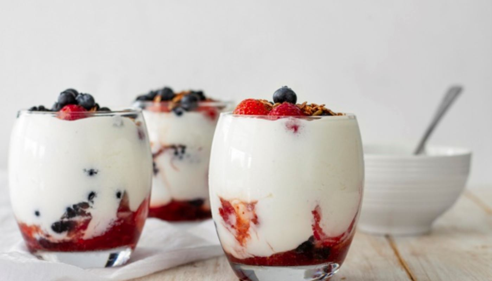
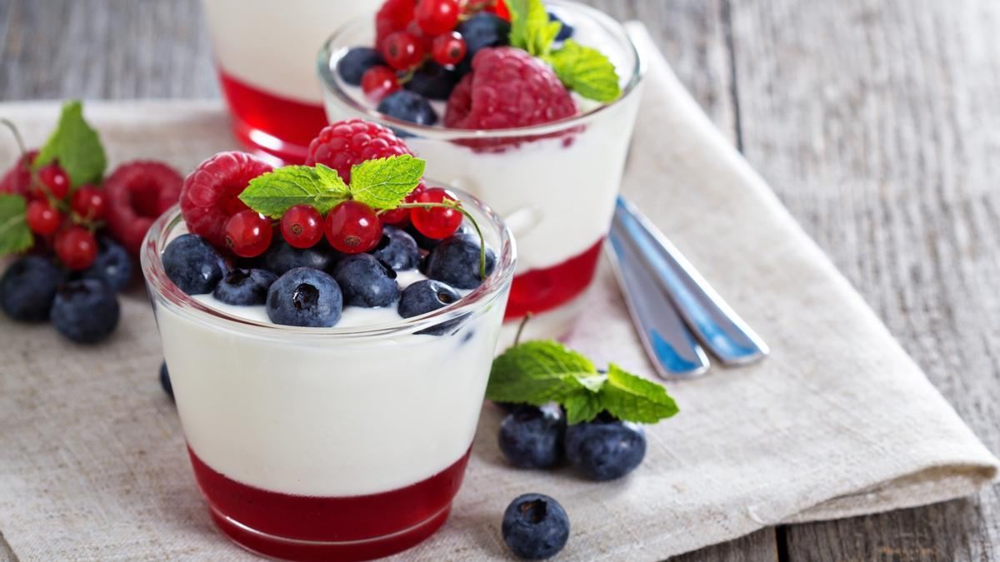

Ingredientes
- 1 litro de leche
- Frutos rojos (fresas, moras, frambuesas, arándanos, etc.)
- 2 cucharadas de yogur natural o cultivo de yogur
- Azúcar (opcional, al gusto)
- Esencia de vainilla (opcional, para dar sabor)
- Miel (opcional, para endulzar)
Paso a paso
- Calienta la leche hasta 85-90°C y luego enfríala a 43-46°C.

- Prepara el starter mezclando yogur con un poco de leche tibia.

- Mezcla el starter con la leche.

- Fermenta durante 6-8 horas a 43-46°C.

- Refrigera el yogur durante al menos 2 horas.

- Lava y prepara los frutos rojos.

- Sirve el yogur en recipientes individuales y añade los frutos rojos.

Resultado final
Disfruta de esta receta.

Volver al principio